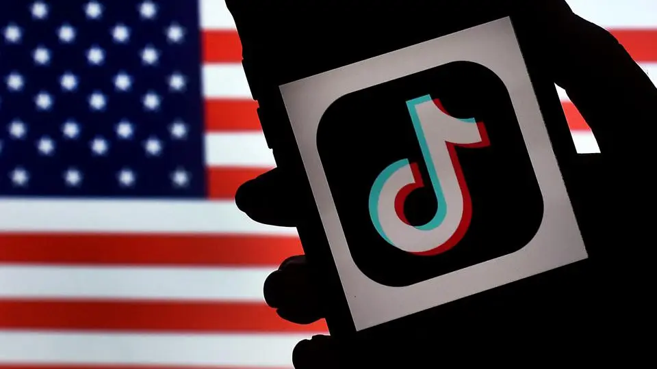
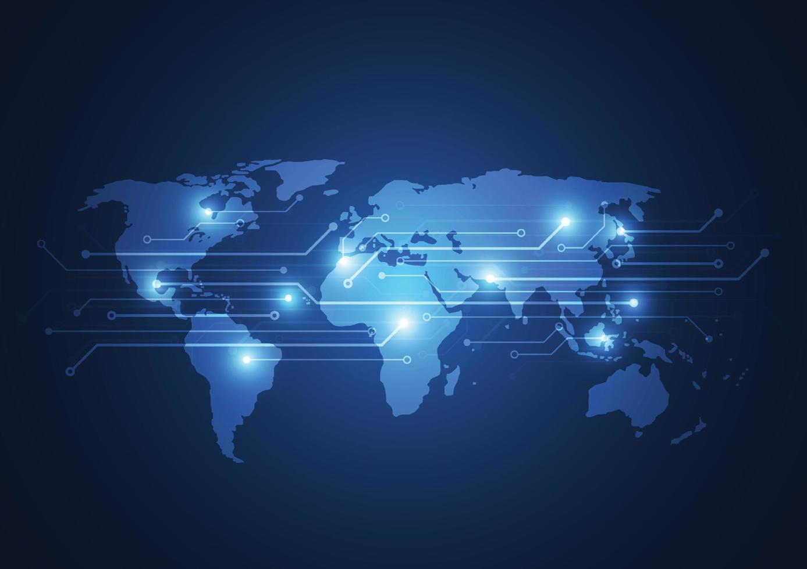

Social media has been praised for its potential to transcend borders, connect people around the world, and open up pathways of communication between cultures and societies. However, playing out in social media is an existing division between democratic and authoritarian regimes.
There are over 5.07 Billion Social media users worldwide (62% of the Global Population) as of April 2024. Among the 5 Billion Social Media Users, Facebook is the most popular platform with over 3 Billion Monthly Active users (Statistica, 2024).
China is the Most Active country on Social Media with 1.06 Billion Social Media users as of January 2024. Among the Social media apps available in China, WeChat is the most popular platform (Thomala,2024). China has an interesting relationship with the social mediascape.
8 out of the top 15 social media platforms are based in the United States while 6 out of the top 15 social media platforms are based out of China (Dixon, 2024).
The separation that is seen between the United States and China on social media has its roots in the postcold war era
the US encourages the promotion of exchange of ideas on social media and encourages the spread of its internet presence across the world
Countries like China, Russia and North Korea have become weary of America's domineering presence. Authoritarian Regimes have placed restrictions on citizens social media usage and the accessibility to Western websites and Platforms.
Authoritarian Nations approach to internet access is characterized by extreme limitations and regulations on their citizens internet access. One example of these limitations is Chinas ‘Great Fire Wall’. The Peoples Republic of China developed an Internet Filtration or Firewall which limits users ability to see content based on keywords. The great firewall is a major limiting factor for Chinese social media users to connect with the rest of the world digitally (Chandel, 2019).
North Korea has opted to adopt a ‘mosquito-net’ method to internet access which allows for foreign trade opportunities while restricting internet freedom. North Korea has been almost entirely cut off from the Social Media space (Chen, 2010).
Although China is fearful of American influence, it is not a one sided relationship. Fear of foreign influence has been voiced in the United States in recent years.
In the 2016 US Election the idea of Russian election interference played a major role in the discussion of the Election and the Internet Research Agency that had close ties to Russia created and used Twitter troll accounts to spread political dissemination (Xiao, 2020).
As of May, 2024 United States legislators have passed regulations that voice concerns of the Social Media platform TIktok. The United States and other western governments have become fearful of the proposition that TikTok has been used to give sensitive user information to the Chinese government (Wang, 2020).
As stated by Dr Chunmeizi Su (2024 )“For the US, banning TikTok would jeopardise the entire notion of a ‘globalised internet’.”
The idea of free speech and expression are a fundamental cornerstone of the Democratic System. Apps such as Facebook are democratic in nature as they promote the exchange of ideas, opinions and memes.
Understanding the relationship between Democracy and Internet freedom can give insights into Democracies impact on global communication and the role America is playing as a leader in breaking the divide of language, borders and culture.
Visualising the great divide between the east vs west on social media is important, as we can begin to understand the way in which barriers online erode global conversation and connectivity. Both regimes have a role to play in facilitating connection and lowering communication barriers to achieve a more globally connected society.
Although the internet and Social media has been praised for its ability to connect the world and further globalization, The future isn’t looking bright. Its safe to say that Authoritarianism has caused major roadblocks for the way of global interconnectivty. While facebook and other platforms have successfully opened communication between many countries of the world, there is still a global divide that is geopolitical and ideological.
A future where Authoritarian and Democratic nations could communicate could mean breaking down barriers and stereotypes that have caused a fundamental divide between the two. A connected future could also mean pressuring governments and regimes to have more communication between each other which helps benefit the citizens of the world.